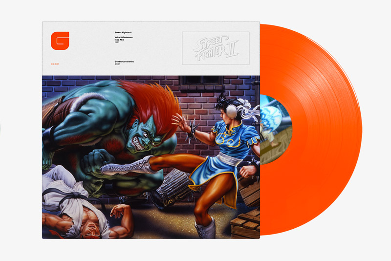
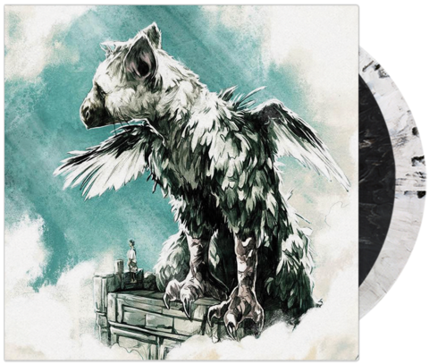

Curiosities
Today we want to offer you a new curiosity about vinyl, did you know that there are video game soundtracks
edited on vinyl? Just amazing. We already know that vinyl records have become authentic in recent years
jewels that collect all kinds of music lovers. In vinyl we can find all kinds of genres, groups and discographies,
but what about video games? Well also!
In recent times it has become fashionable to combine the nostalgia that retro video games bring us with the edition of their
wonderful soundtracks, nothing more and nothing less than vinyl record edition.
It is true that we all remember mythical games that marked a before and after in our conception of
the video games and little we remember the great soundtracks that accompany the story, the action and the characters.

One of the record companies that has set out to launch this perfect combination, Data Discs, announced that two of the video games
that they would release with the soundtrack on vinyl would be Street Fighter II and Shenmue. The English company reached an agreement with SEGA for the
release of its soundtracks in the edition we like most, on vinyl record.
For the lovers of one of the most important fighting games like Street Fighter they are in luck, since they will be able to get the
soundtrack in vinyl format.
But we have more games now that have also joined in recalling the vinyl record as the action video game, The Last Guardian.
The followers of the game will be able to obtain in the collector's edition the soundtrack in vinyl format that includes up to 19 themes of the game.

We are many who were born under the influence of the mythical consoles and video games of yesteryear,
That's why and because the occasion deserves it, we want to make a special contribution to our friends at the video game store, Retrospain,
where you can find the latest news, reviews and special offers in video games and consoles now and before.
Remember that in RetroSpain you can find the video game of The Last Guardian! Now you just have to get
its magnificent soundtrack on vinyl record.
To enjoy!